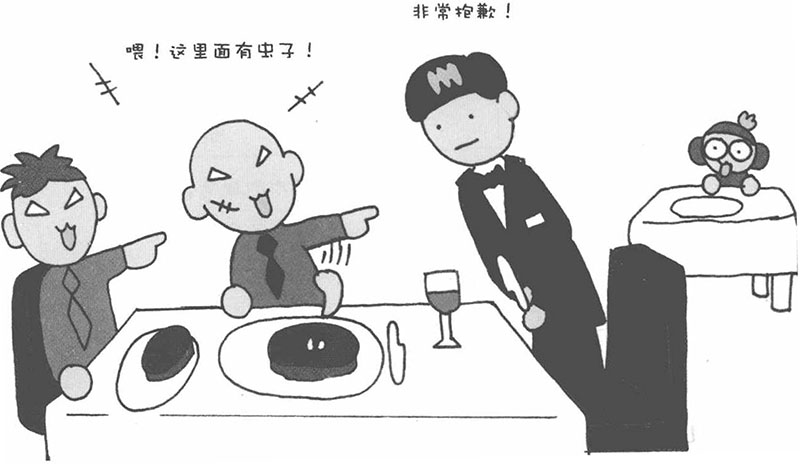
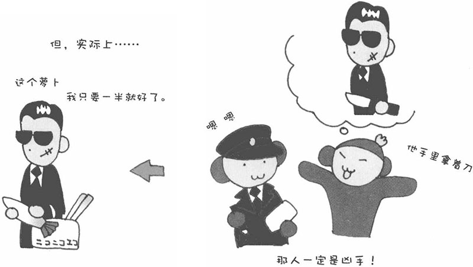

俗话说"耳听为虚，眼见为实"，可遗憾的是，我们的视觉并不可靠。亲眼所见的不一定就是真实的。人们感知到的很多信息都是通过视觉获得的。据统计，在五官中，视觉获得的信息占80%以上。然而，视觉获得的信息并不可靠。请您看下面的图，只看2秒钟，然后接着往下读。

图中画的是在餐厅中，图中有因在食物中发现虫子而怒不可遏的顾客和不停道歉的服务生。接下来，我问您一个问题。图中有一个人手里拿着刀子，请问是哪个人？（请不要再去看图，凭记忆回答。）
如果看得不仔细，大多数人会认为穿紫色衬衫或红色衬衫的客人手里拿着刀。那么，请再看一看前一页的图。原来刀子在服务生手中，两位客人都没有拿刀。（能正确回答这个问题的人，具有敏锐的洞察力。如果您的回答是后面的猴子，说明您想得太多了，哈哈！）
为什么大多数人会回答是客人手里拿着刀呢？那是因为这个情景发生在餐厅里，而常识告诉我们，客人用餐才会拿餐刀。此外，还有的朋友观察到两个客人的面相比较凶悍，可能与黑社会有关，所以先入为主地认为他们手里拿着刀。这个测验说明固定观念和常识等甚至可以左右人们视觉的记忆。
在现实生活中，警察在进行犯罪调查需要询问目击者时，目击者的叙述有时也会受到先入为主的观念的影响。有人认为自己看到的人与凶犯非常相似，也许他并没有看清那个人手里拿着什么，却会认定他手里拿的是凶器。因此，有些证人的证词反而会将案件调查引入歧途。这也说明人是可以通过想象来制造印象的。
